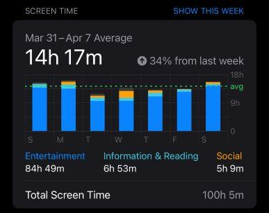
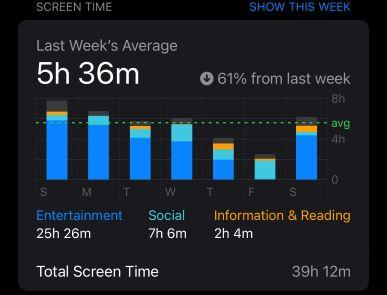

Main Page
Hello, and welcome to the main page of this website! For my English 250 class, I did an experiment where for one week I attempted to reduce my phone usage to down under an hour a day. It didn't go exactly how I planned it to, being entirely honest. I ended up averaging around 5 hour a day instead, which you could say is a bit beyond my goal. Still, that was a BIG change in my lifestyle. But did it make a big improvement in my life?
This was the week before the experiment. Not exactly great.
Not my goal, but a pretty great reduction!
Well, thats a bit harder to quantify. Jack circa 4/7/2024 to 4/13/2024 would have certainly said no, and I'm inclined to agree. Phone usage, like all things, can be problematic and addictive. I've certainly used my phone in counterproductive ways before! But that doesn't mean it's all bad, a healthy relationship with your phone doesn't have to mean reducing your screentime as much as possible. It's possible to be happy and productive with high levels of phone usage, just as its possible to be happy and productive with very little. It doesn't make sense to arbitrarily reduce your phone usage if you feel that phone usage is enriching your life.
Below, I have a series of links leading to various pages detailing my experience, and research around how phone usage can effect your life.